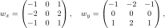
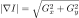
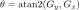
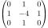
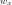

marks edges and whose angle gives their orientation; directional filters respond to one orientation only, the Laplacian to all, at zero crossings.
marks edges and whose angle gives their orientation; directional filters respond to one orientation only, the Laplacian to all, at zero crossings.
Method
Sobel kernels:


,
. Prewitt uses 1 instead of 2 (less smoothing). Laplacian
: second derivative, edges at zero crossings, very noise sensitive (often after Gaussian smoothing). Directional filters (e.g.
alone, or kernels rotated by 45°) highlight linear features of a given orientation: faults, field boundaries. Thresholding the gradient magnitude gives an edge map.Example
gx = ndimage.sobel(band.astype(float), axis=1)
gy = ndimage.sobel(band.astype(float), axis=0)
mag = np.hypot(gx, gy); edges = mag > np.percentile(mag, 95)Intuition
Edge detectors are discrete derivatives: flat regions give zero, steps give large responses, and the direction of steepest change is perpendicular to the edge.
Pitfall
Derivatives amplify noise; on SAR images, with multiplicative speckle, difference-based detectors fail and ratio-based detectors are used instead.